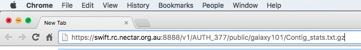

Introduction to Galaxy
Background
Galaxy is a web-based analysis and workflow platform designed for biologists to analyse their own data. It can be used to run a variety bioinformatics tools. The selection of bioinformatics tools installed on the Galaxy instance we are using today caters for the analysis of bacterial genomics data sets.
Bioinformatics tools can be added from the Galaxy ‘tool shed’ or removed as necessary from your Galaxy instance.
Galaxy is an open, web-based platform. Details about the project can be found here.
The Galaxy interface is separated into three parts. The tool list on the left, the viewing panel in the middle and the analysis and data history on the right. We will be looking at all three parts in this tutorial.

This activity will familiarise you with the Galaxy interface. It will cover the following operations:
- Logging in to the server
- Putting data onto Galaxy
- Using some common tools
Learning Objectives
At the end of this tutorial you should be able to:
- Register and login to a Galaxy server.
- Upload data to a Galaxy server from:
- A file on your local computer.
- A file on a remote datastore with an accessible URL.
- Use tools in Galaxy by:
- Accessing the tool via the tool menu.
- Using the tool interface to run the particular tool.
- Viewing/accessing the tool output.
Login to Galaxy
- Open a new tab or window on your web browser.
- Use Firefox or Chrome - Please don’t use Internet Explorer or Safari.
- Type in the following address: 43.240.98.1/galaxy (or your personal mGVL instance / sepsis mGVL)

Register/Login as a user (“User” button on the right):

If you haven’t yet registered, Register:
- Select: User -> Register
- Enter your email, choose a password, repeat it and add a (all lower case - FIXME:why?) one word name
- Click Submit
If you have already registered, Login:
- Select: User -> Login
- Enter your username & password
- Click Submit
Put data onto Galaxy
There are 2 main ways to put your data onto Galaxy, this section will run through both ways. First, we need to make a new history.
Make a new history
Note: Make a new folder to store the work we are about to perform
- Click on the history menu button
 at the top of the History panel.
at the top of the History panel. - Select Create New
- FIXME: name it?
Datatypes
What sort of file is being uploaded?
We need to tell Galaxy what sort of file is being uploaded. Some common datatypes (file formats) are: text, fasta, fastq, vcf, GFF, GenBank, tabular.
Upload a file from your own computer
With this method you can get most of the files on your own computer into Galaxy.
Download the following file to your computer
- Copy this URL and paste it into the address bar in your web browser: https://swift.rc.nectar.org.au:8888/v1/AUTH_377/public/galaxy101/Contig_stats.txt.gz
This is a file stored on the cloud. Press Enter, and the file will download (FIXME: on Mac but others?). Note the download location. 
Upload the file to Galaxy
- From the Galaxy tool panel, click on Get Data -> Upload File
- Click the Choose File button
- Find and select the Contig_stats.txt.gz file you downloaded and click Open
- Set the “file format” to tabular
- Click the Start button
- Once the progress bar reaches 100%, click the Close button
The file will now upload to your current history.
Upload a file from a URL
If a file exists on a web resource somewhere and you know its URL (Unique Resource Location - a web address) you can directly load it into Galaxy.
- From the tool panel, click on Get Data -> Upload File
- Click on the Paste/Fetch Data button
- Copy and paste the following web address into the URL/Text box: https://swift.rc.nectar.org.au:8888/v1/AUTH_377/public/COMP90014/Assignment1/bacterial_std_err_1.fastq.gz
- Set the file format to fastqsanger (CAREFUL: not fastqcsanger)
- Click Start
- Once the progress bar has reached 100%, click Close
- Note that Galaxy is smart enough to recognize that this is a compressed file and so it will uncompress it as it loads it.
Upload another file from a URL
Now we are going to upload another file from the remote data source.
- Repeat the above for: https://swift.rc.nectar.org.au:8888/v1/AUTH_377/public/MRSA0252.fna
- Note: this file is a fasta file.
- The DNA sequence of Staphylococcus aureus MRSA252 will be loaded into your history as a fasta file.
- Your History should now look like this:

The data
A brief description of each of the three files uploaded to Galaxy.
Contigs_stats.txt
- this file contains a table of summary data from a de novo genome assembly (the process of attempting to recover the full genome of an organism from the short read sequences produced by most DNA sequencing machines).
- The columns contain a lot of information but the ones we will be using indicate the amount of data (or coverage) that went into making up each piece of the final assembly.
bacterial_std_err_1.fastq.gz
- This file contains sequence reads, in the format produced by Illumina sequencing machines. Read more about the fastq format at Wikipedia.
MRSA0252.fna
- This file contains the genome sequence of Staphylococcus aureus MRSA252. Read more about the fasta format at Wikipedia.
Galaxy tools
The purpose of this section is to help you become familiar with the way tools are run on Galaxy.
We will see how to:
- rename files
- summarize assembly statistics
- convert file formats, and
- find features in a DNA sequence.
Rename Files
Two of the files in the History have very long and confusing names. File names can be changed by taking the following steps:
- Click on the edit icon
 next to the file in the History called: https://swift.rc.nectar.org.au:8888/v1/AUTH_377/public/COMP90014/Assignment1/bacterial_std_err_1.fastq
next to the file in the History called: https://swift.rc.nectar.org.au:8888/v1/AUTH_377/public/COMP90014/Assignment1/bacterial_std_err_1.fastq - In the “Name” text box, give it a new name. Rename it to: typical.fastq
- Click the Save button.
Repeat the process with another file:
- Find the file called: https://swift.rc.nectar.org.au:8888/v1/AUTH_377/public/MRSA0252.fna
- Rename it to MRSA252.fna
Much better. There is other functionality hidden behind that edit icon
You can change a file’s datatype, convert its format and many other things. Feel free to play around with them at a later date.
Summarize assembly statistics
We are going to produce a histogram of contig read-coverage depths and calculate the summary statistics from the Contig_stats.txt file.
To do this we need to make some changes to the Contig_stats.txt file:
- cut out a couple of columns from the file
- remove a line from the file
- produce a histogram
Cut out and keep two columns
- Click on the eye icon
 of the Contig_stats.txt file to have a look at it.
of the Contig_stats.txt file to have a look at it. - Note that there are 18 columns in this file. We want column 1 and column 6.
- From the tool panel, click on Text Manipulation -> Cut and set the following:
- Set “Cut Columns” to: c1,c6
- “Delimited by”: Tab
- “Cut from”: Contig_stats.txt
- Click Execute
- Examine the new file by clicking on its eye icon . We now have 2 columns instead of the 18 in the original file.
Remove the Header lines of the new file
- From the tool panel, click on Text Manipulation -> Remove beginning and set the following:
- “Remove First”: 1
- “from”: Cut on data1
- click Execute
- Note the the new file is the same as the previous one without the header line.
Make a histogram
- From the tool panel, click on Graph/Display Data -> Histogram and set the following:
- “Dataset”: Remove beginning on Data X
- “Numerical column for X axis”: c2
- “Number of breaks”: 25
- “Plot title”: Histogram of Contig Coverage
- “Label for X axis”: Coverage depth
- Click Execute
- Click on the eye icon of the histogram to have a look at it. Note there are a few peaks. Maybe these correspond to single, double and triple copy number of these contigs.
Calculate summary statistics for contig coverage depth
- From the tool panel, click on Statistics -> Summary Statisitics and set the following:
- “Summary statistics on”: Remove beginning on Data X
- “Column or expression”: c2
- Click Execute
- You’ll note that the summary statistics tool failed (red background in the History). There was an error!
- If you click on the filename, and then the bug symbol
 , it will tell you what went wrong. (There is a missing python library).
, it will tell you what went wrong. (There is a missing python library). - At this point, you would normally contact your Galaxy server administrator.
Convert file formats
This shows how to convert a fastq file to a fasta file. The tool creates a new file with the converted data.
- From the tool panel, click on Convert Formats -> FASTQ to FASTA and set the following:
- “FASTQ file to convert”: typical.fastq
- Click Execute
- The output is a new Fasta file called FASTQ to FASTA on data 2.
Find features
This example shows how to use a tool called “barrnap” to search for rRNAs in a DNA sequence.
Find all of the ribosomal RNAs in a sequence
- From the tool panel, click on Annotation -> barrnap and set the following:
- “Fasta file”: MRSA252.fna
- Click Execute
- The output is barrnap on data 3. It is a format gff3 file. (general feature format version 3). Each line in the file describes a feature in the DNA sequence.
Filter the annotations to get the 23S RNAs
- Make a file with only the 23S rRNA features
- From the tool panel, click on Filter and Sort -> Select and set the following:
- “Select lines from”: (whatever you called the barrnap gff3 output)
- “the pattern”: 23S (this will look for all the lines in the file that contain “23S”)
- Click Execute
- Now you have a gff3 file with just the 23S annotations!
What now?
Remember how we started a new History at the beginning? If you want to see any of your old histories, click on the History menu button at the top of the History panel and then select “Saved Histories.” This will give you a list of all the histories you have worked on in this Galaxy server.